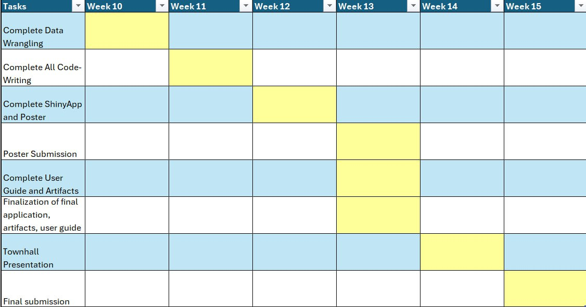

Project Proposal
Project Theme
Analytical Regionalisation and Geographical Segmentation (tentative)
Project Motivation
Singapore has experienced a demographic shift, with the proportion of the citizens aged 65 and older increasing by 11.7% from 10 years ago. (Source) Such a shift comes with a higher prevalence of chronic illness and disabilities. To address this, the Singaporean government has committed to building more polyclinics (Source) and eldercare centres (Source). Furthermore, they intend to diversify eldercare centres’ capabilities to also encompass basic health check-ups (Source) and they are working towards removing physical barriers to entry in current polyclinics. These measures are to ensure that healthcare remains physically accessible to any elderly person who needs it. This is especially important since geographical accessibility has been identified as one of the biggest contributing factors to polyclinic visitations (Source).
Furthermore, the government has been pushing for active ageing, where the elderly persons still engage in social and physical activity to maintain their health and well-being (Source). To this end, the Singaporean government has been trying to increase the number of active ageing centres (Source) to make it more accessible to seniors.
As such, our project aims to gain a deeper understanding of the geographical distribution of eldercare centres throughout Singapore. Currently, there have been studies conducted to understand the geographical accessibility of the polyclinics, as well as identify any potentially underserved regions. One study conducted in 2012 suggested that Sembawang and Jurong West were two underserved regions. (Source). With the rising elderly population, we must ensure that there are sufficient facilities to meet the growing demand in each region. A more recent study conducted in 2018 suggests that eldercare specifically is sparse in the Central Region. (Source)
Our exact objectives will be discussed in the following section.
Objectives
For this project, we would like to achieve the following objectives:
To visualise hot and cold spots for our selected age demographics (elderly aged 65-100)
To plot the locations of various eldercare amenities and facilities across Singapore
- To visualise whether these amenities are distributed evenly across Singapore
Data
The following is our data, inclusive of the site it was sourced from and its content.
| Data set (link) | Content |
|---|---|
| Singapore Residents by Planning Area, Age Group and Sex, Jun 2018 (Gender) |
|
| Eldercare Services |
|
| Pois Data Set from Geofabrik |
|
Methodology
- Data Preparation
Sourcing geospatial and attribute data from reliable data platforms
Importing data into R
Data wrangling using R packages:
To clean and validate data
To extract relevant study areas and attributes
R packages used: (to add more if necessary; maybe don’t include in proposal first)
tidyr
tmap
sf
sfdep
- Exploratory Data Analysis
Visualize and examine the distribution of attribute data
Discover potential anomalies, outliers, or trends
Come up with hypotheses to narrow our focus in further data analyses
- Spatial Points Pattern Analysis to Discover the Distribution of Senior Citizens in Singapore
- Global Measures of Spatial Autocorrelation
- To analyze how attributes of geographically referenced data differs as a whole
Local Measures of Spatial Autocorrelation
- To analyze location related tendency (clusters or outliers) in the attributes of geographically referenced data (points or area), and detect hot and cold spot areas
4. ShinyApp
Allow users to use the interactive ShinyApp intuitively and easily
Explanation of methods to allow users to understand the concept of each methods
Clear instructions to guide the interpretation of analysis results and formulation of conclusions
Timeline
